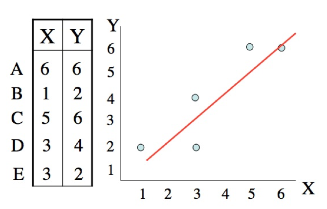
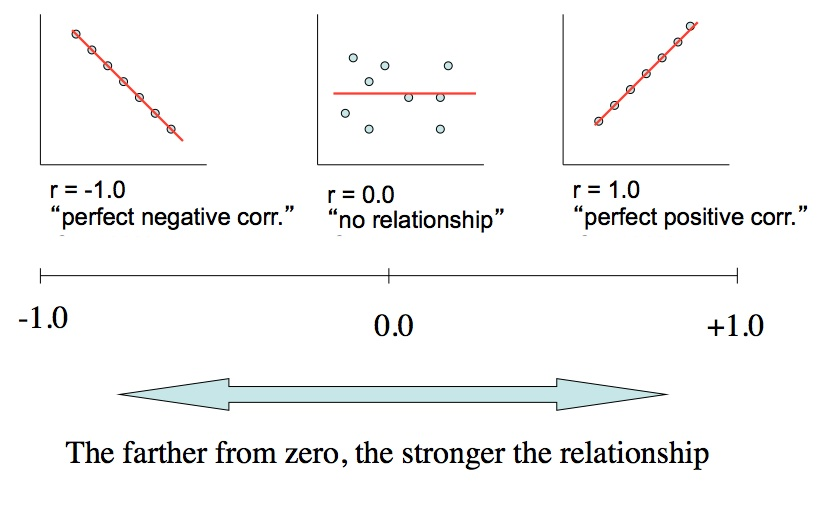

Week 3 lecture notes - PSYC 3330
Our goal this week is to talk about describing relationships between two variables. Particularly, we will introduce the idea of correlation, and we'll talk about how to compute a correlation coefficient.
Visualizing "bivariate" data
The most common way to visualize a relationship between two variables is by using a scatter plot.

Two things we can infer from this scatter plot:
- Direction
- positive
- \(x\) and \(y\) vary in the same direction
- "As \(x\) goes up, \(y\) also goes up"
- negative
- \(x\) and \(y\) vary in opposite directions
- "As \(x\) goes up, \(y\) goes down"
- positive
- Strength – how are the data spread around the line of best fit?
- indexed by correlation coefficient (\(r\)), which ranges from -1 to +1
- \(r=0\) –> no relationship
- values closer to \(\pm 1\) indicate stronger relationships

How do we compute correlation coefficient?
The formula for computing a correlation coefficient is
\[ r = \frac{\sum Z_xZ_y}{N} \]
It is literally the "average cross product" of the z-scores
Example
The computations are trivial..but there is a lot to keep track of. Let's compute the correlation coefficient \(r\) for the data we just plotte above.
Step 1 - compute the standard deviation for \(x\)
| \(x\) | \(y\) | \(x-M\) | \((x-M)^2\) |
|---|---|---|---|
| 6 | 6 | 2.4 | 5.76 |
| 1 | 2 | -2.6 | 6.76 |
| 5 | 6 | 1.4 | 1.96 |
| 3 | 4 | -0.6 | 0.36 |
| 3 | 2 | -0.6 | 0.36 |
| \(M_x=3.6\) | \(SS_x=15.20\) |
So,
\[ SD_x 0= \sqrt{\frac{SS_x}{N}} = \sqrt{\frac{15.2}{5}} = 1.74 \]
Step 2 - compute the standard deviation for \(y\)
| \(x\) | \(y\) | \(x-M\) | \((x-M)^2\) | \(y-M\) | \((y-M)^2\) |
|---|---|---|---|---|---|
| 6 | 6 | 2.4 | 5.76 | 2 | 4 |
| 1 | 2 | -2.6 | 6.76 | -2 | 4 |
| 5 | 6 | 1.4 | 1.96 | 2 | 4 |
| 3 | 4 | -0.6 | 0.36 | 0 | 0 |
| 3 | 2 | -0.6 | 0.36 | -2 | 4 |
| \(M_x=3.6\) | \(M_y=4.0\) | \(SS_x=15.20\) | \(SS_y=16\) |
So we have
\[ SD_y = \sqrt{\frac{SS_y}{N}} = \sqrt{\frac{16}{5}} = 1.79 \]
Step 3 – compute \(z\)-scores for \(x\) and \(y\)
| \(x\) | \(y\) | \(x-M\) | \((x-M)^2\) | \(y-M\) | \((y-M)^2\) | \(z_x\) | \(z_y\) |
|---|---|---|---|---|---|---|---|
| 6 | 6 | 2.4 | 5.76 | 2 | 4 | 1.38 | 1.1 |
| 1 | 2 | -2.6 | 6.76 | -2 | 4 | -1.49 | -1.1 |
| 5 | 6 | 1.4 | 1.96 | 2 | 4 | 0.8 | 1.1 |
| 3 | 4 | -0.6 | 0.36 | 0 | 0 | -0.34 | 0.0 |
| 3 | 2 | -0.6 | 0.36 | -2 | 4 | -0.34 | -1.1 |
| \(M_x=3.6\) | \(M_y=4.0\) | \(SS_x=15.20\) | \(SS_y=16\) | ||||
| \(SD_x=1.74\) | \(SD_y=1.79\) |
Step 4 – multiply the \(z\) scores
| \(x\) | \(y\) | \(x-M\) | \((x-M)^2\) | \(y-M\) | \((y-M)^2\) | \(z_x\) | \(z_y\) | \(z_xz_y\) |
|---|---|---|---|---|---|---|---|---|
| 6 | 6 | 2.4 | 5.76 | 2 | 4 | 1.38 | 1.1 | 1.52 |
| 1 | 2 | -2.6 | 6.76 | -2 | 4 | -1.49 | -1.1 | 1.64 |
| 5 | 6 | 1.4 | 1.96 | 2 | 4 | 0.8 | 1.1 | 0.88 |
| 3 | 4 | -0.6 | 0.36 | 0 | 0 | -0.34 | 0.0 | 0 |
| 3 | 2 | -0.6 | 0.36 | -2 | 4 | -0.34 | -1.1 | 0.37 |
| \(M_x=3.6\) | \(M_y=4.0\) | \(SS_x=15.20\) | \(SS_y=16\) | sum=4.41 | ||||
| \(SD_x=1.74\) | \(SD_y=1.79\) |
Step 5 – find the average of the products in step 4
\[ r=\frac{\sum z_xz_y}{N} = \frac{1.52+1.64+0.88+0+0.37}{5} = \frac{4.41}{5} = 0.89 \]
More examples
Example 1:
| x | y | \(x-M_x\) | \((x-M_x)^2\) | \(y-M_y\) | \((y-M_y)^2\) | \(z_x\) | \(z_y\) | \(z_xz_y\) |
|---|---|---|---|---|---|---|---|---|
| 1 | 5 | -2 | 4 | 2 | 4 | -1.418 | 1.418 | -2.00 |
| 2 | 2 | -1 | 1 | -1 | 1 | -0.709 | -0.709 | 0.50 |
| 3 | 3 | 0 | 0 | 0 | 0 | 0 | 0 | 0 |
| 4 | 4 | 1 | 1 | 1 | 1 | 0.709 | 0.709 | 0.50 |
| 5 | 1 | 2 | 4 | -2 | 4 | 1.418 | -1.418 | -2 |
| \(M_x=3\) | \(M_y=3\) | \(SS_x=10\) | \(SS_y=10\) | |||||
| \(SD_x=1.41\) | \(SD_y=1.41\) |
So \(r=\frac{\sum z_xz_y}{N}=-0.60\)
Example 2:
| x | y | \(x-M_x\) | \((x-M_x)^2\) | \(y-M_y\) | \((y-M_y)^2\) | \(z_x\) | \(z_y\) | \(z_xz_y\) |
|---|---|---|---|---|---|---|---|---|
| 1 | 5 | -2 | 4 | 0 | 0 | -1.418 | 0 | 0 |
| 2 | 7 | -1 | 1 | 2 | 4 | -0.709 | 0.877 | -0.622 |
| 3 | 2 | 0 | 0 | -3 | 9 | 0 | -1.316 | 0 |
| 4 | 3 | 1 | 1 | -2 | 4 | 0.709 | -0.877 | -0.622 |
| 5 | 8 | 2 | 4 | 3 | 9 | 1.418 | 1.316 | 1.866 |
| \(M_x=3\) | \(M_y=5\) | \(SS_x=10\) | \(SS_y=26\) | |||||
| \(SD_x=1.41\) | \(SD_y=2.28\) |
So \(r=\frac{\sum z_xz_y}{N}=0.124\)
Example 3
Four young children were monitored closely over a period of several weeks to measure how much they watched violent TV programs and their amount of violent behavior toward their playmates.
| TV (hours) | Violent acts |
|---|---|
| 14 | 9 |
| 8 | 6 |
| 6 | 1 |
| 12 | 8 |
Compute the correlation coefficient:
| \(x\) | \(y\) | \(x-M_x\) | \((x-M_x)^2\) | \(y-M_y\) | \((y-M_y)^2\) | \(z_x\) | \(z_y\) | \(z_xz_y\) |
|---|---|---|---|---|---|---|---|---|
| 14 | 9 | 4 | 16 | 3 | 9 | 1.265 | 0.973 | 1.23 |
| 8 | 6 | -2 | 4 | 0 | 0 | -0.633 | 0 | 0 |
| 6 | 1 | -4 | 16 | -5 | 25 | -1.265 | -1.622 | 2.05 |
| 12 | 8 | 2 | 4 | 2 | 4 | 0.633 | 0.649 | 0.41 |
| \(M_x=10\) | \(M_y=6\) | |||||||
| \(SD_x=3.162\) | \(SD_y=3.082\) |
So \(r=\frac{\sum z_xz_y}{N} = \frac{3.69}{4}=0.92\)
Effect size
One common way in which the correlation coefficient is used in psychological research is to index the effect size. That is, it provides a way to judge the strength of a relationship numerically.
Convention:
- small: r~0.10
- medium: r~0.30
- large: r~0.50